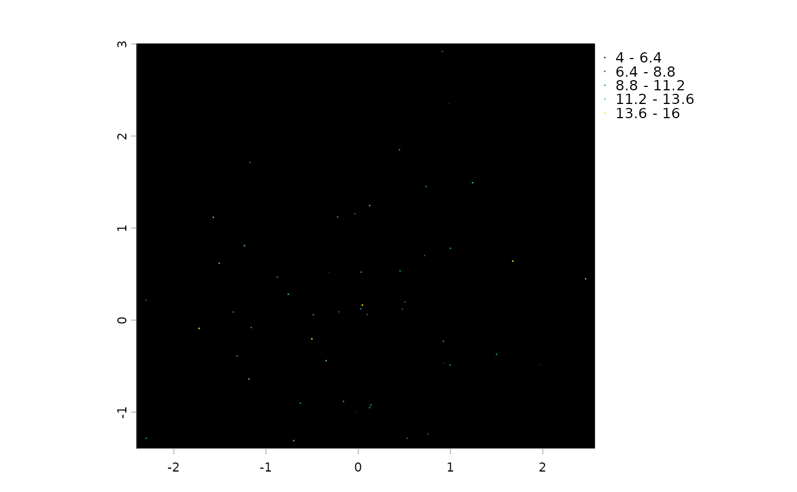
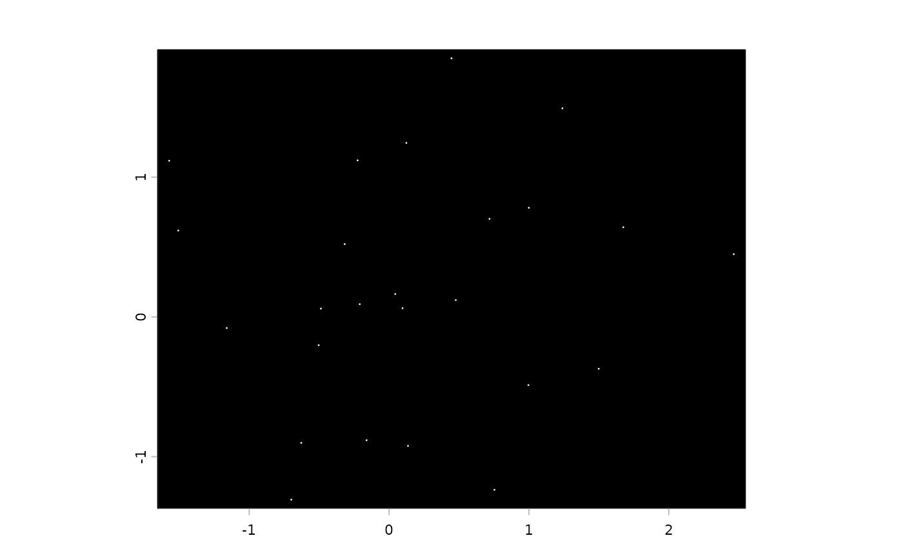
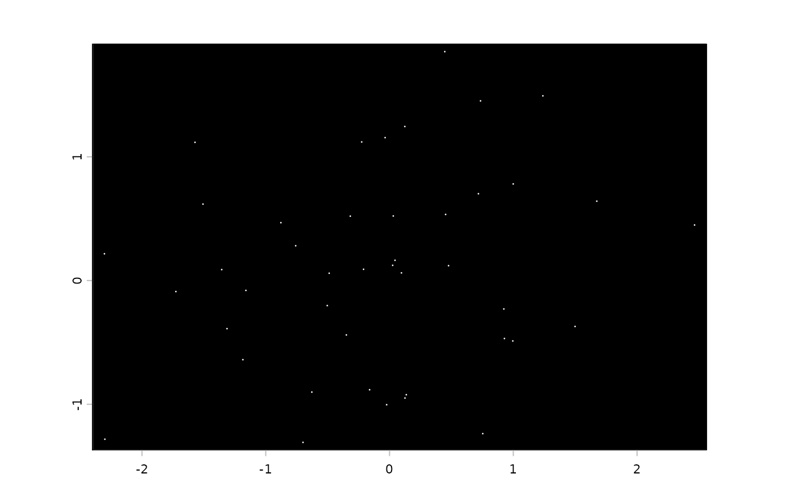
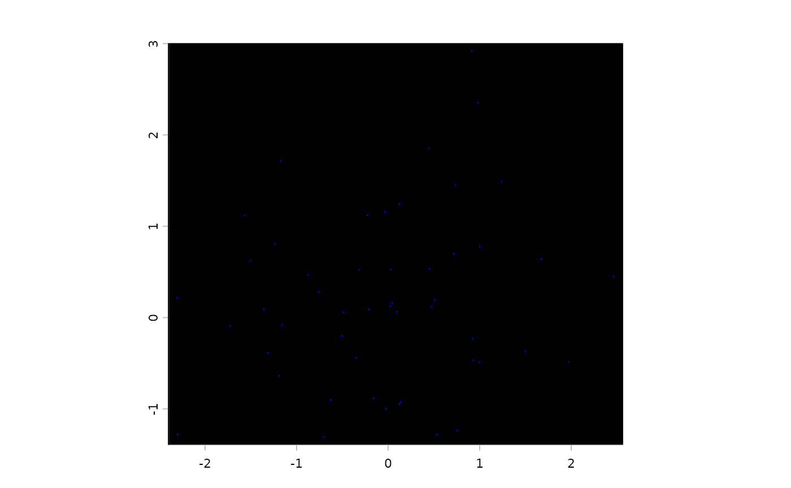

S4 class allowing point detection-like access patterns for binned spatial values. Implemented more efficiently by only representing the spatial points once and mapping the sparse values information against the points.
Slots
spatialANY (currently
SpatVectoronly). Row-indexed spatial pointscountsdata.tablewith integer colsiandjmapping to@fidand@bidrespectively.xis a numeric col standing for count or value of a feature for this bin point. Row indexing of this object is based on this slot.bidcharacter. Bin IDs to map againstpmapinteger. For each spatial point, gives the index into@bid. Length equalslength(spatial). Forms a bridge between spatial and counts: bothpmapandcounts$jare indices into@bid. Invariant: every bin ID incounts$jmust appear inpmap(i.e., counts is always a subset of spatial). Allows subsettingcountswithout modifying the more expensivespatialrepresentation until compaction.fidcharacter. Feature IDs to map againstcompactlogical. State of compaction. WhenTRUE,@bid,@pmap, and@spatialcontain only bins that appear in@counts(bidirectional relationship). WhenFALSE, they may contain bins not present in@counts(unidirectional: every bin in counts has spatial, but not every spatial has counts).
Examples
ids <- sprintf("bin_%d", 1:50)
sl <- createSpatLocsObj(rnorm(100))
sl$cell_ID <- ids
m <- matrix(floor(runif(500) * 3),
ncol = 50,
dimnames = list(letters[1:10], ids)
)
ex <- createExprObj(m)
gbp <- createGiottoBinPoints(ex, sl)
# basics -------------------------------------------------------- #
force(gbp)
#> An object of class giottoBinPoints
#> feat_type : "rna"
#> dimensions : 325, 2
#> compact : TRUE
#> feat_ID count
#> <char> <num>
#> 1: b 2
#> 2: c 1
#> 3: d 2
#> 4: e 2
#> 5: f 1
#> 6: h 2
#>
nrow(gbp)
#> [1] 325
dim(gbp)
#> [1] 325 2
data.table::as.data.table(gbp)
#> feat_ID count
#> <char> <num>
#> 1: b 2
#> 2: c 1
#> 3: d 2
#> 4: e 2
#> 5: f 1
#> ---
#> 321: c 1
#> 322: d 1
#> 323: f 1
#> 324: h 1
#> 325: i 2
head(gbp)
#> An object of class giottoBinPoints
#> feat_type : "rna"
#> dimensions : 6, 2
#> compact : TRUE
#> feat_ID count
#> <char> <num>
#> 1: b 2
#> 2: c 1
#> 3: d 2
#> 4: e 2
#> 5: f 1
#> 6: h 2
#>
tail(gbp)
#> An object of class giottoBinPoints
#> feat_type : "rna"
#> dimensions : 6, 2
#> compact : TRUE
#> feat_ID count
#> <char> <num>
#> 1: j 1
#> 2: c 1
#> 3: d 1
#> 4: f 1
#> 5: h 1
#> 6: i 2
#>
objName(gbp)
#> [1] "rna"
featType(gbp)
#> [1] "rna"
# subsetting ---------------------------------------------------- #
gbp[50:100]
#> An object of class giottoBinPoints
#> feat_type : "rna"
#> dimensions : 51, 2
#> compact : FALSE
#> feat_ID count
#> <char> <num>
#> 1: c 2
#> 2: d 1
#> 3: g 1
#> 4: i 2
#> 5: j 1
#> 6: a 1
#>
gbp["a"] # get only points for feature "a"
#> An object of class giottoBinPoints
#> feat_type : "rna"
#> dimensions : 25, 2
#> compact : FALSE
#> feat_ID count
#> <char> <num>
#> 1: a 1
#> 2: a 1
#> 3: a 1
#> 4: a 2
#> 5: a 1
#> 6: a 1
#>
gbp[letters[1:4]] # get only points for features "a", "b", "c", "d"
#> An object of class giottoBinPoints
#> feat_type : "rna"
#> dimensions : 134, 2
#> compact : FALSE
#> feat_ID count
#> <char> <num>
#> 1: b 2
#> 2: c 1
#> 3: d 2
#> 4: a 1
#> 5: b 2
#> 6: c 1
#>
# plotting ------------------------------------------------------ #
plot(gbp, dens = TRUE) # will take a long time on large datasets

plot(gbp["a"]) # plot feature "a" only

plot(gbp[c("a", "d")]) # plot features "a" and "d" together

# spatial ------------------------------------------------------- #
ext(gbp) # spatial extent
#> SpatExtent : -2.30322375260073, 2.46431165767245, -1.30801840243713, 2.91912824385047 (xmin, xmax, ymin, ymax)
d <- Giotto::hexVertices(1)
#> Error in loadNamespace(x): there is no package called ‘Giotto’
d$poly_ID <- "a"
#> Error: object 'd' not found
hex <- createGiottoPolygon(d)
#> Error in h(simpleError(msg, call)): error in evaluating the argument 'x' in selecting a method for function 'createGiottoPolygon': object 'd' not found
plot(gbp, col = "blue")

plot(hex, add = TRUE, border = "red")
#> Error in h(simpleError(msg, call)): error in evaluating the argument 'x' in selecting a method for function 'plot': object 'hex' not found
plot(crop(gbp, hex), add = TRUE, col = "green") # cropping
#> Error in h(simpleError(msg, call)): error in evaluating the argument 'x' in selecting a method for function 'plot': error in evaluating the argument 'y' in selecting a method for function 'crop': object 'hex' not found
hex2 <- tessellate(ext(gbp), shape_size = 1)
#> 16 polygons generated
res <- calculateOverlap(hex2, gbp) # overlapped feature calculation
m <- overlapToMatrix(res) # overlap info to expression matrix
force(m)
#> 10 x 16 sparse Matrix of class "dgCMatrix"
#> [[ suppressing 16 column names ‘ID_1’, ‘ID_2’, ‘ID_3’ ... ]]
#>
#> a . 3 2 1 . 3 4 . 2 3 2 1 . . 1 1
#> b 2 4 2 2 1 3 5 1 3 3 3 1 . 1 . .
#> c 2 3 4 2 3 5 5 1 2 3 4 1 . 1 . 1
#> d 2 4 2 . 3 5 5 1 2 3 2 1 . . 1 1
#> e . 5 3 . 2 3 4 1 2 3 2 . . 1 . 1
#> f 2 5 1 . 3 3 5 . 3 2 1 1 . 1 1 1
#> g 2 3 3 2 2 2 7 1 3 3 1 1 . 1 1 1
#> h 2 5 2 . 3 4 2 1 2 1 4 1 . . 1 .
#> i 1 5 2 2 2 5 5 1 1 2 3 . . . . 1
#> j 2 2 3 1 3 3 4 . 3 1 3 1 . . . 1